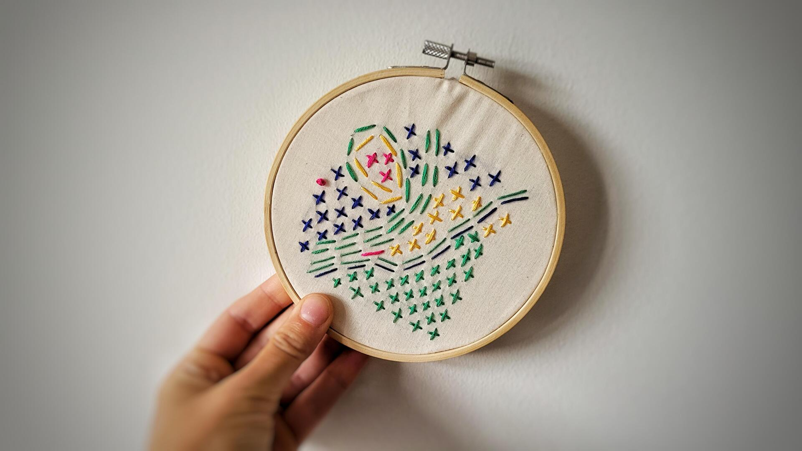
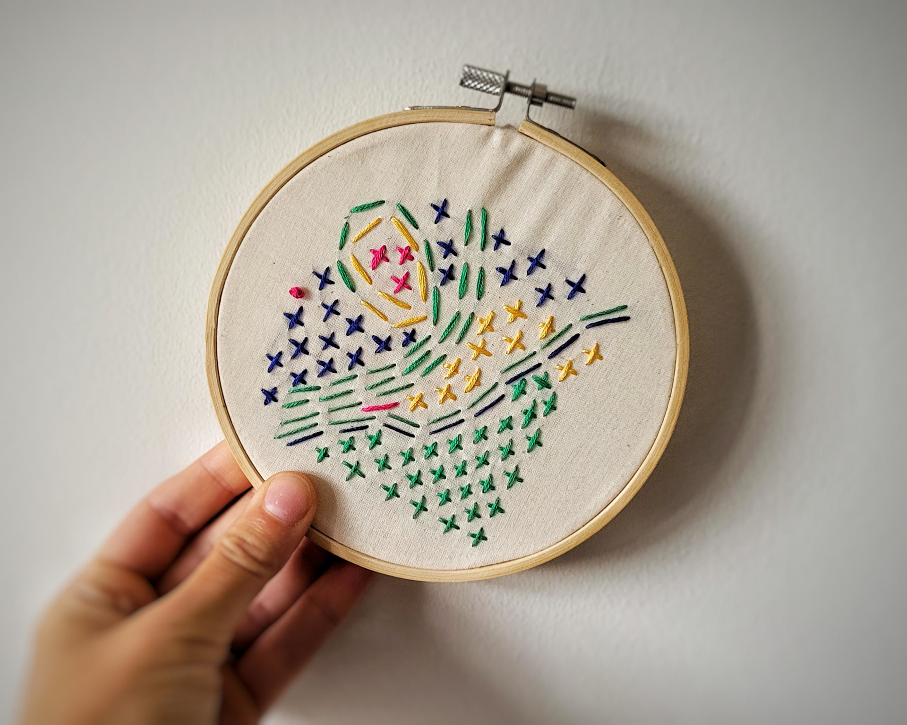

🪷The Pond #3: Mentorships open!
Come learn with me!
by Ada Homolova · September 16, 2025

🪷The Pond 🪷 is back!
After a delicious summer break, we are back with more to learn, read, and experience.
Rolling into the autumn, I’m feeling recharged and inspired 🤩 That’s why I’m launching my first-ever data journalism mentorship cohort (yes, it’s happening! 🎉).
I’m also exploring new ways to blend storytelling with craft. Scroll down for my first embroidered data visualization inspired by invasive species and stitched in the traditional Japanese sashiko style. It’s a tactile reminder that data isn't just numbers on a screen. It’s everywhere!
Let’s dive in together. 👇
🐸 Mentorships open!
It is finally happening! The first cohort for my data journalism mentorship is open 🥳
I’m thrilled to launch this mentorship and to guide all thecurious minds through hands-on, story-driven learning.
Over the course of 8 weeks, we’ll work together on a project of your choice. Along the way, you’ll build and sharpen the skills you want to focus on, whether that’s basic data analysis, programming, data visualization, or how to communicate findings in a meaningful way.
By centering on a real story, you’ll integrate the data skills naturally with every stage of reporting, from asking the right questions to shaping your narrative.
Interested? 👉 READ MORE & APPLY here
Stitching data
Inspired by an invasive plant called Himalayan balsam that's currently taking over our local forest, I created an embroidered data visualization featuring all 114 species on the “Invasive Alien Species of Union Concern” list.
Each organism is represented through a unique stitch, and thread colors correspond to their natural habitats.

✖️ A cross stitch marks an Animal
➖ A straight stitch marks a Plant
⚫ A French knot marks a Chromista (in this case, Rugulopteryx okamurae, a species of brown algae)
🟦 Freshwater
🟩 Terrestrial
🟥 Marine
🟨 Multiple habitats
The piece is stitched in the style of sashiko, the Japanese art of visible mending.
Sashiko teaches us that repair isn’t about erasing the damage. It’s about honoring the full story. When we mend something with care, it becomes stronger, and often more beautiful than before.
Browse all the invasive species in this beautifully illustrated 2022 EU brochure 👉 “An introduction to the invasive alien species of Union concern”
That’s it for now!
With 💚 and 🐸,
Ada